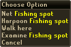
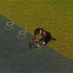
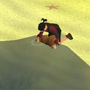

")
Fishing - The Basics
Introduction | Types of Fishing | Crayfish Cages | Small Net Fishing | Bait Fishing | Big Net Fishing | Caskets
Fly Fishing | Harpoon Fishing | Lobster Fishing | Karambwan Vessel Fishing
Fly Fishing | Harpoon Fishing | Lobster Fishing | Karambwan Vessel Fishing
Introduction
When you have found a Fishing spot, right-click over a Fishing spot and a menu with a list of Fishing options will appear.
 Click on the option you want and, providing you have the correct equipment in your inventory, you will attempt to catch a fish.
An aspiring fisherman needs to be patient: you should always keep in mind that with a higher Fishing ability comes the potential of catching better food.
Types of Fishing
This section explains about the different types of Fishing you can take part in within RuneScape. Similar tables can be opened in the game by clicking the Fishing skill icon in the stats menu.
Crayfish Cages

Members' Location: West of Sinclair Mansion.
Required items: Crayfish cage
You begin at level one with a crayfish cage.
You can only catch crayfish with a crayfish cage.
Small Net Fishing

Members' Location: Found in many Fishing spots along the coasts, such as Catherby, Fishing Platform (after completion of the Sea Slug quest) and Lumbridge Swamp Dungeon.
Required items: Small net
You begin at level one with a small fishing net. At this level you are only able to catch shrimp.
Sea creatures that can be caught with a small fishing net: shrimp, anchovies, karambwanji, frog spawn and monkfish (for members-only).
Bait Fishing

Members' Location: Found in many fishing locations, such as Catherby, Seers' Village Lake, Ardougne river, Shilo Village, Mort Myre Swamp, Lumbridge Swamp Dungeon, Fishing Platform (after completion of the Sea Slug quest) and the Tree Gnome Stronghold.
Required items: Fishing Rod and Fishing Bait (You will use up 1 bait every time you catch a fish).
Bait can be purchased from Fishing shops for a few coins. You can also obtain bait from killing monsters such as zombies and slayer Banshees.
Big Net Fishing - (Members Only)

Required items: Big net
To fish with the big net you will need level 16 Fishing.
Items you can catch with a big net: caskets, seaweed, leather gloves, leather boots, oysters, mackerel, cod and bass.
Caskets - (Members Only)
To open a casket and see what it contains, simply click on it in your inventory. Caskets can contain many different items including money, gems, talismans, court summons or even items like half keys!
Fly Fishing

Members' Location: Found in many river Fishing locations, such as Ardougne River, Seers' Village Lake and the Tree Gnome Stronghold.
Required items: Fly-fishing rod and feathers (You will use up 1 feather every time you catch a fish).
Feathers can be bought for a few coins in Fishing shops. They can also be obtained by killing chickens, or by snaring birds.
You may begin to fish with this tool at level 20 Fishing. At this level you will begin by catching trout.
Fish that are able to be caught with a fly-fishing rod and feathers: trout, salmon and rainbow fish (which can only be caught with the feather of the tropical wagtail).
Harpoon Fishing

Members' Location: Found in many sea Fishing locations, such as the Fishing Guild, Catherby, Rellekka, Elf Camp, Fishing Platform (after completion of the Sea Slug quest) and Brimhaven.
Required items: Harpoon.
To begin Fishing with a harpoon you will need a Fishing level of 35. At this level you will begin by catching tuna.
This is what you can catch with a harpoon: tuna, swordfish and shark (these are found in the harpoon/net spots).
Lobster Fishing

Members' Location: Found in many sea Fishing locations, such as the Fishing Guild, Catherby, Rellekka, Fishing Platform (after completion of the Sea Slug quest) and Brimhaven.
Required items: Lobster pot.
To catch lobster you need a Fishing level of 40 or above.
You can only catch lobsters with a lobster pot.
Karambwan Vessel Fishing - (Members Only)

Required items: Karamabwan vessel and raw karambwanji
You must have begun the Tai Bwo Wannai Trio quest to learn how to fish for karambwan.
You can only catch karambwan with the karambwan vessel.
Click here to view the Fishing FAQs

More articles in
Fishing
|
|
|
Further Help
If this article does not help you, you may find the following sections of the RuneScape site helpful:
|
|